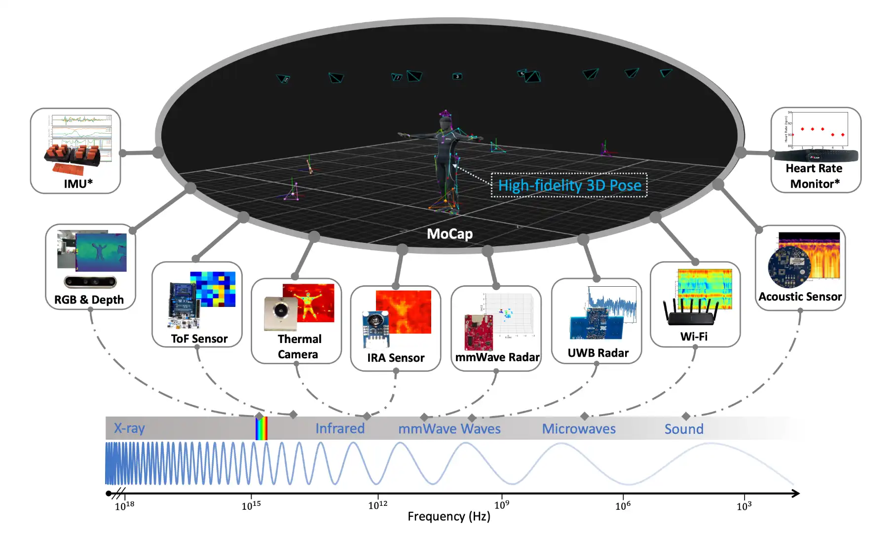
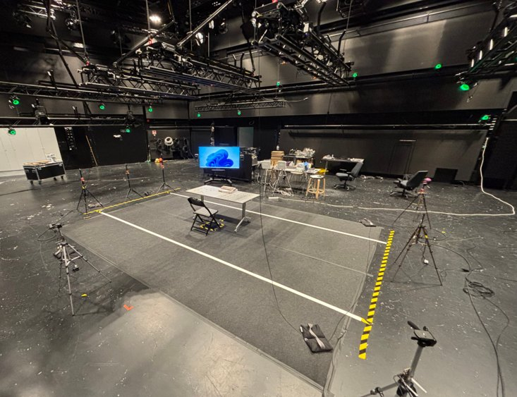
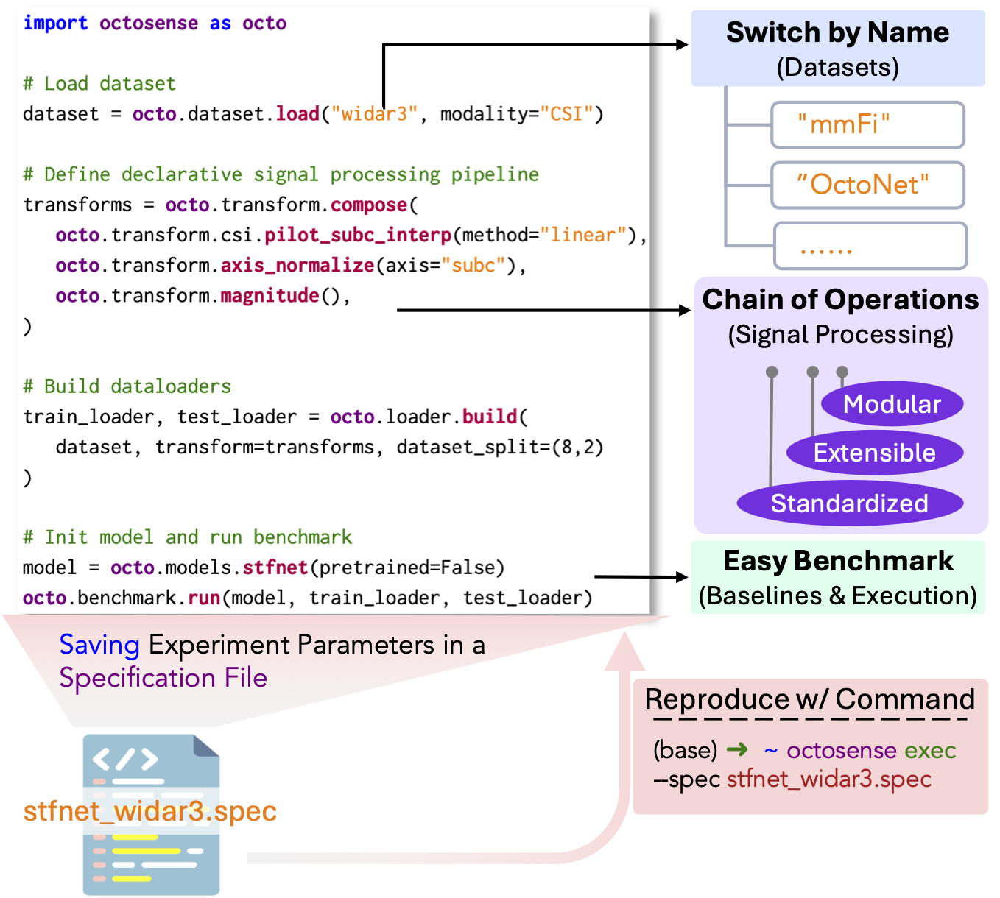
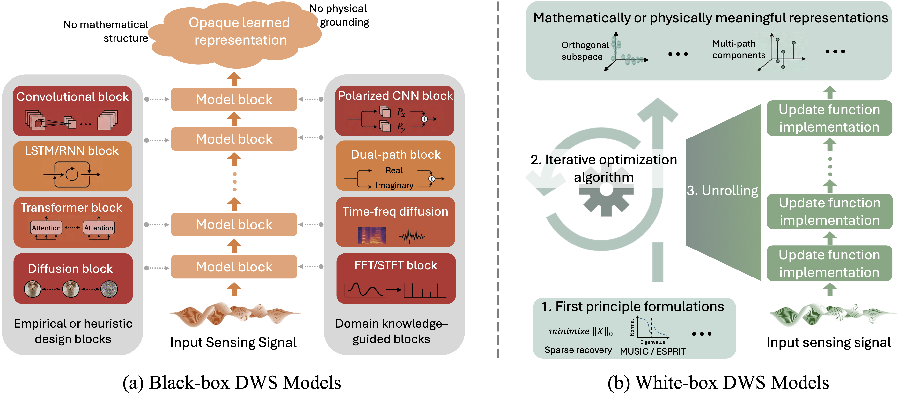
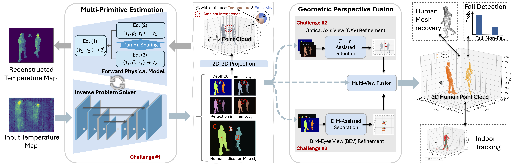
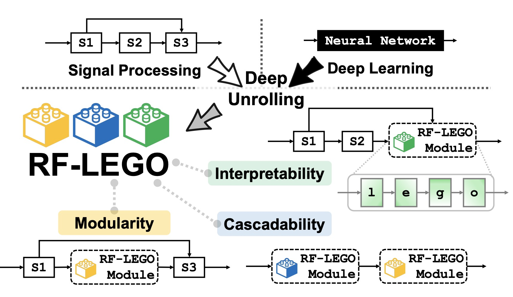

Dataset landscape
Compare multi-modal sensing resources—how they differ in modalities, tasks, and complementarity—with deep dives into OctoNet and RF-Behavior.
ACM UbiComp / ISWC 2026 · Half-day Tutorial
A structured and hands-on introduction to public datasets, benchmark design, multi-modal learning, and practical resources for multi-modal intelligence beyond vision.
Overview
Ubiquitous computing is moving from bespoke, single-sensor systems toward robust multi-modal perception. Open datasets, shared platforms, and model designs—white-box, physics-informed, and signal-processing–learning co-design—are making it possible to compare modalities, reproduce results, and build reusable sensing pipelines.
This tutorial combines concise lectures with deep dives into OctoNet, RF-Behavior, and OctoSense, then three sensing model paradigms (RF-CRATE, TAP3D, RF-LEGO), plus a guided notebook session on streaming download, modality loading, and visualization.
What you will learn
Compare multi-modal sensing resources—how they differ in modalities, tasks, and complementarity—with deep dives into OctoNet and RF-Behavior.
See how a unified data abstraction, signal operators, and benchmark engine can move wireless sensing toward ImageNet-style reproducibility.
White-box models (RF-CRATE), physics-informed thermal-to-3D learning (TAP3D), and signal-processing–learning co-design (RF-LEGO).
Stream, load, and visualize OctoNet and RF-Behavior modalities with shared notebook workflows you can reuse after the conference.
Representative program
Scheduled for the afternoon of Oct 11, 2026 in Room 5I (Floor 5F), with online participation via Zoom. Exact start time follows the official UbiComp / ISWC 2026 schedule.
Motivation, scope, learning goals, and tutorial format.
Speaker: Prof. Chenshu Wu
Workflows for OctoNet and RF-Behavior: streaming download, modality loading, and visualization.
Open research questions and discussion.
Speaker: Prof. Chenshu Wu
Open tutorial materials
Linked resources below are ready to explore. Tutorial slides will be released closer to the conference.
Datasets

Large-scale multi-modal human activity dataset with motion-capture 3D pose labels; streaming download and visualization via the demo notebook.

Multimodal RF dataset (radar, RFID, LoRa, IMU, mocap) for gestures, activities, and affective behavior, from Aalto University.
Platform

A unified open-source wireless sensing ecosystem: data abstraction, standardized signal operators, and a benchmark engine toward ImageNet-style reproducibility.
Models & methods

White-box deep wireless sensing with fully mathematically derivable architectures across RF modalities.

Physics-informed learning for thermal-assisted 3D human point cloud generation.

Modular signal-processing and deep-learning co-design for RF sensing via deep unrolling.
Who should attend?
The tutorial is intended for graduate students, postdoctoral researchers, faculty members, and industry researchers or engineers working in ubiquitous computing, mobile and wearable sensing, HCI, signal processing, and applied machine learning.
All tutorial resources are open-sourced and can be downloaded anytime from the Materials section—datasets, code, and demos included.
People
Organizers
Featured speakers